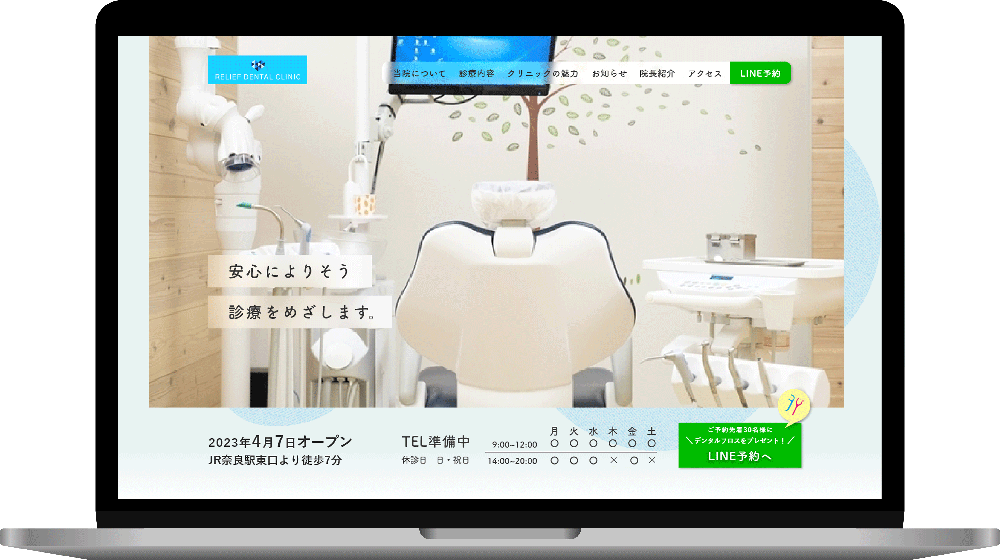

架空サイトデンタルクリニックLPデザイン
| 制作期間 | 一週間 |
|---|---|
| 使用ツール | Adobe PhotoshopAdobe XD |
| 制作意図・こだわり | カラー：清潔感のある青色を使用し、ロゴカラーを参考に、コンテンツごとに同系色で色分けを行いました。 フォント：丸みのある筑紫ゴシックを使用し、優しい印象を与えるサイト作りを目指しました。 ボタン：ボタンだと認識できるよう、アイコンにドロップシャドウを取り入れています。 あしらい：各コンテンツのタイトルの左横に、クリニックのロゴを線画のみにしたアイコンを作成し、設置しました。 ファーストビュー：デンタルクリニックがいつオープンするのか真ん中に表示。 アクセスの良さもわかりやすく左下に強調。すぐ下にLINE予約ボタンを設置し、LINEロゴと同じ色にしました。 |
| 気を付けたこと | ・ファーストビューで何科のクリニックかわかるように、治療室や医療器具が写った写真を起用しました。 ・キャッチコピーである「安心によりそう診療をめざします」は写真とかぶって可視性が低くないらないように、背景をぼかしました。 ・診療時間はターゲットが特に知りたい情報だと思うので、最初に見るメインビジュアルと、最後のアクセスの２箇所に設置しました。 |
| ◆医院名 | relief dental clinic |
|---|---|
| ◆創業 | 2023年10月（開業予定） |
| ◆事業規模 | 小規模 |
| ◆制作背景 | 2023年10月に開業予定のデンタルクリニック。 新規開業に伴い、ターゲットに対して広く認知させるべくLPを制作したい。 |
| ◆魅力 | ・・院長が女性 ・最新の審美歯科が受けられる ・痛みをなるべく感じないように治療してくれる ・WEB予約ができてお待ちいただく時間が少ない ・それぞれの歯の悩みに寄り添い最適な治療が受けられる |
| ◆ターゲット | 年齢：30～50代 ミドル層 男女 |
| ◆キャッチコピー | 安心によりそう診療をめざします |